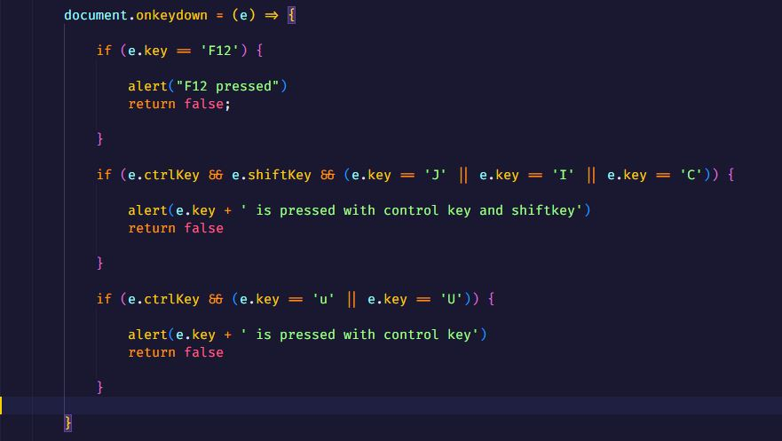

Disable inspect element using js
from these keys we can see inspect element or source code
- Right click
- F12
- Control + Shift + J
- Control + Shift + I
- Control + Shift + U
- Control + U
- First we have to disable right click for that we have to set oncontextmenu="return false" on body from which
we can prevent from user right click for context menu like this :
-
for shortcut keys we have get key on keydown on document then add if else conditions for shorcut keys like this :
